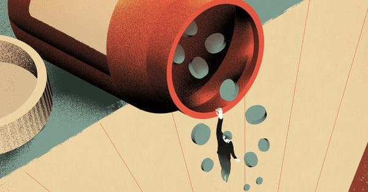
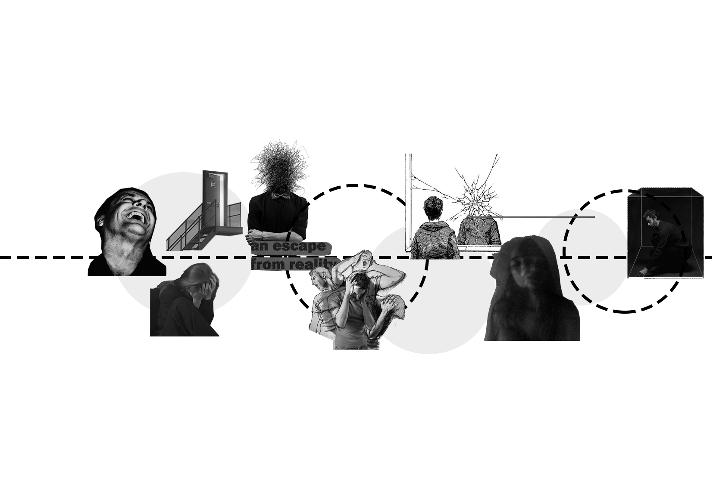
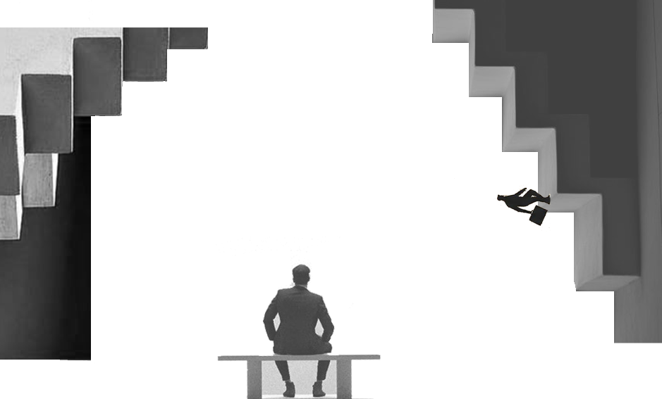

Architecture that adapts to the patient,
not the other way around.
A machine-learning model reads a patient's psychology and the site environment, then recommends the architectural design for their recovery phase — and scores how well that design supports healing.

The problem

Rehab centers are built one-size-fits-all. But a high-trauma detox patient needs dim, quiet, private refuge — while a rehab-phase patient needs daylight, openness and belonging. The same room can't serve both.
The solution

Map psychology + environment → design per phase: ceiling, corridor width, daylight, shading screen, privacy, social spaces — plus a 0–100 healing score. Served live through a Grasshopper node.
Phases, orientation & climate
Patients are organized into 3 recovery phases mapped to 4 clusters with fixed orientations, tuned to El Minya's hot-desert (BWh) climate.
NW
NE — gentle AM light
NW
NW
NW = harsh afternoon sun (deep shading, tight glazing) · NE = gentle morning light (sensory-sensitive / high-trauma patients).
Environmental analysis — Ladybug under the real El Minya EPW


Generative shading screen
The model sets the perforated screen's openness per orientation — the GH façade reads it live from facade_recommendations.csv.
Inputs & outputs
Patient psychology + environment (left) drive the architectural recommendations (right).
Inputs — patient + site
| Depression | 0–42 |
| Anxiety | 0–42 |
| Stress | 0–1 |
| Trauma | 0–80 |
| Substance type + severity | 6 types · 0–1 |
| Sensory sensitivity | 0–1 |
| Spatial & relapse triggers | categories |
| Behaviour pattern | 3 types |
| Privacy need | 0–1 |
| Recovery phase | detox-1/2 · rehab |
| Age · Gender | 16–60 · F/M |
| Orientation environment | NW / NE |
Outputs — 16 design targets + score
| Ceiling height | 4.5–5.2 m |
| Corridor width | 3.5–5 m |
| Daylight / glazing | 5–60 % |
| Shading-screen openness | 10–70 % |
| Glare control | 0–1 |
| Shading depth | 0–1 |
| Natural ventilation | 0–1 |
| Privacy / enclosure | 0–1 |
| Acoustic comfort | 0–1 |
| Biophilic intensity | 0–1 |
| Light warmth | 0–1 |
| Social gradient | 0–1 |
| Belonging / activity | 0–1 |
| De-escalation | 0–1 |
| Accommodation | multi/shared/private |
| Family space | 0–1 |
| Healing score | 0–100 |
All inputs are grounded in expert interviews and evidence-based literature — no random or fabricated values.
500 profiles · 0 nulls · evidence-grounded
An evidence-grounded simulation (not real records): inputs sampled from validated Egyptian scales + 2 interviews; climate validated in Ladybug.


Multi-output regression
4 models compared; best chosen by 5-fold CV. The score is one 0–100 number — a weighted 8-pillar evidence rubric scored on the design.
Model comparison
| Model | Test R² | CV R² |
|---|
Per-target R²
Healing-score rubric — 8 pillars (one combined score)
Ulrich supportive design · Terrapin biophilic · trauma-informed structured choice · WELL daylight/acoustic · ASHRAE thermal · stage-appropriate social & belonging.
Change the patient → watch the design respond
This runs the model's exact rules in your browser. Move a slider or flip the orientation and the recommendations + healing score update instantly.
Cluster: —
Workflow Demonstration
Watch the complete workflow from parametric modeling, Ladybug solar simulation, dataset extraction, ML model training, and the real-time Grasshopper prediction node.
If the video player doesn't load or asks for permission, click the button below to watch it directly on SharePoint.
▶ Watch Video on SharePoint